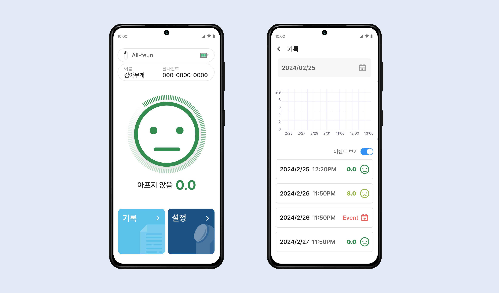

<!DOCTYPE html>
<html>
    <head>
        <meta charset="utf-8" />
        <meta name="viewport" content="width=device-width, initial-scale=1">
        <title>All-Teun</title>
        <link rel="stylesheet" type="text/css" href="../css/styles.css">
        <link rel="preconnect" href="https://fonts.googleapis.com">
        <link rel="preconnect" href="https://fonts.googleapis.com">
        <link rel="preconnect" href="https://fonts.gstatic.com" crossorigin>
        <link href="https://fonts.googleapis.com/css2?family=Courier+Prime:ital,wght@0,400;0,700;1,400;1,700&family=Montserrat:ital,wght@0,100..900;1,100..900&display=swap" rel="stylesheet">
        <link rel="icon" type="image/png" href="../dy_favicon.png">
    </head>
</html>
<body>
    <div class="mode-toggle">
        <button id="darkModeToggle">
            
        </button>
    </div>
    <header>
        <div class="language-selector">
            <a href="../sub_all_kr.html">KR</a>
            <div class="lang-divider"></div>
            <a href="#" class="active">EN</a>
            <div class="lang-divider"></div>
            <a href="../cn/sub_all_cn.html">CN</a>
        </div>
    </header>
    <div class="sub-contents">
        <a href="index_en.html">&lt; Back to Home</a>
        
        <div class="sub-contents-text">
            <div class="sub-text-title">Overview</div>
            <div class="sub-text-p">
                All-teun is a healthcare application developed by iKooB in collaboration with the Catholic University of St. Vincent’s Hospital. The app integrates a grip strength measurement device with mobile devices, allowing users to monitor their health status in real-time. Additionally, the collected data is automatically transmitted to healthcare professionals, enabling doctors to more accurately monitor patients' conditions and develop appropriate treatment plans.
                <br/><br/>
                I contributed 100% to the design aspect of this project. For the design, I chose navy blue, the color of the iKooB logo, as the primary color to maintain brand consistency. Moreover, I ensured that the interface was as intuitive and user-friendly as possible, considering a wide range of age groups, so that users of all ages could easily navigate and use the app.
            </div>
        </div>        
        
        
        
        <!-- <div class="sub-contents-text">
            <div class="sub-text-title">Link</div>
            <div class="sub-text-p">
                <a href="https://www.figma.com/design/xBD2dr2IeLAGPgGg58hyhp/GCC-Homepage-(Portfolio)-(Copy)?node-id=1-3580&t=yJh3pUjvuoxccjBw-1">https://www.figma.com/design/xBD2dr2IeLAGPgGg58hyhp/GCC-Homepage-(Portfolio)-(Copy)?node-id=1-3580&t=yJh3pUjvuoxccjBw-1</a>
            </div>
        </div> -->

    </div>
    <footer>
        <p>&copy; 2024 Dayeong Kim. All rights reserved.</p>
    </footer>

    <script src="../js/scripts.js"></script>
</body>